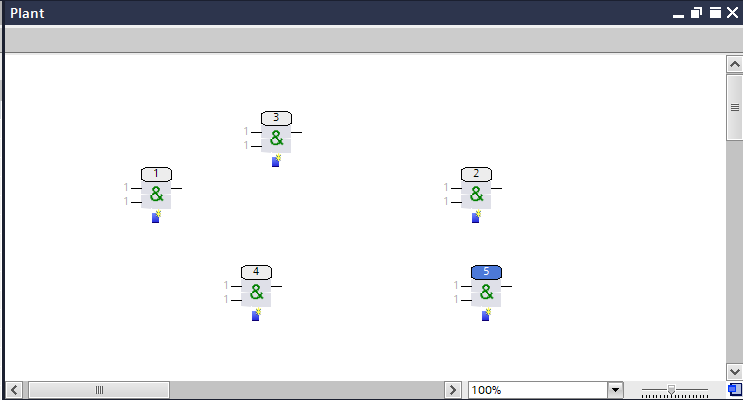
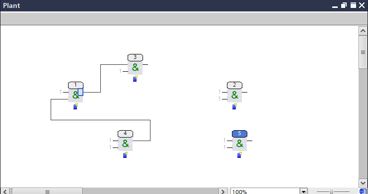
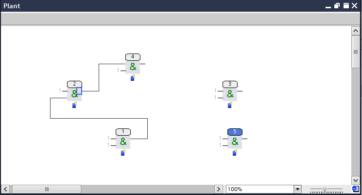

功能块的运行顺序
控制程序包含多个功能块和连接。为了正确计算值，必须定义功能块的运行顺序。这可以自动完成，也可以通过针对关键流程的额外编程来完成。重要的是，顺序不得由Check  和Play
和Play  功能。
功能。

功能Control data和Data flow不再存在。
NOTICE

运行顺序计算错误
不建议手动编辑块运行顺序，因为重新计算时它会被覆盖。
- Use Check and Play function for calculating the run sequence.
- When a new function block is inserted, the next free number is assigned to it.

- Shows the function blocks as they were sequentially placed on the chart.
- Connect the function blocks in the graphic.

- Shows the blocks after connecting 4 to 1 and 1 to 3. An automatic calculation of the run sequence does not take place at this point in time.
- Blocks 2 and 5 have no connection.
- Click Check or Play to reorganize the run sequence of the function blocks.

- The connected function blocks got a correct run sequence. This means that the input value always comes from an output of a previous block. This ensures that the values are calculated correctly.
- Function blocks that are not connected can get a new number (from 2 to 3) or keep the original number (5). However, this has no influence on the control program.